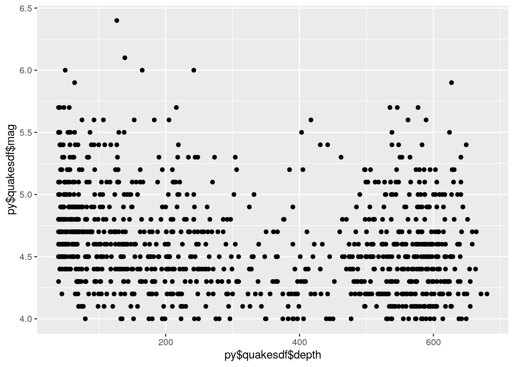

The reticulate package enables R and python to pass information between one another and communicate.
library(reticulate)
air<-airquality #defined dataset in RNow we can use the dataset from R in python!
r.air.head() #accessed this dataset we created in R in python## Ozone Solar.R Wind Temp Month Day
## 0 41 190 7.4 67 5 1
## 1 36 118 8.0 72 5 2
## 2 12 149 12.6 74 5 3
## 3 18 313 11.5 62 5 4
## 4 -2147483648 -2147483648 14.3 56 5 5Assigning a string to a variable in python
python_var="string created in python"
print(python_var)## string created in pythonNow accessing that in R (note the use of py$ before specifying the variable)
py$python_var## [1] "string created in python"
import pandas as pd
quakesdf=pd.read_csv("https://vincentarelbundock.github.io/Rdatasets/csv/datasets/quakes.csv",index_col=0)
quakesdf.head()## lat long depth mag stations
## 1 -20.42 181.62 562 4.8 41
## 2 -20.62 181.03 650 4.2 15
## 3 -26.00 184.10 42 5.4 43
## 4 -17.97 181.66 626 4.1 19
## 5 -20.42 181.96 649 4.0 11Note: in my real life application, I plan to create a histogram
library(ggplot2)
ggplot()+geom_point(aes(py$quakesdf$depth,py$quakesdf$mag))